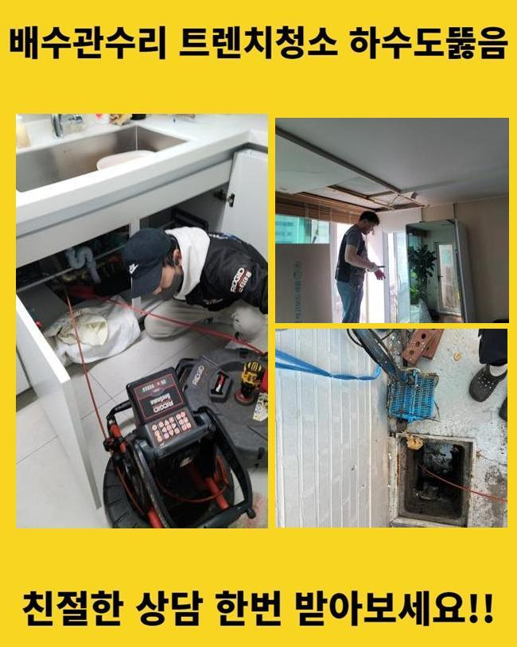
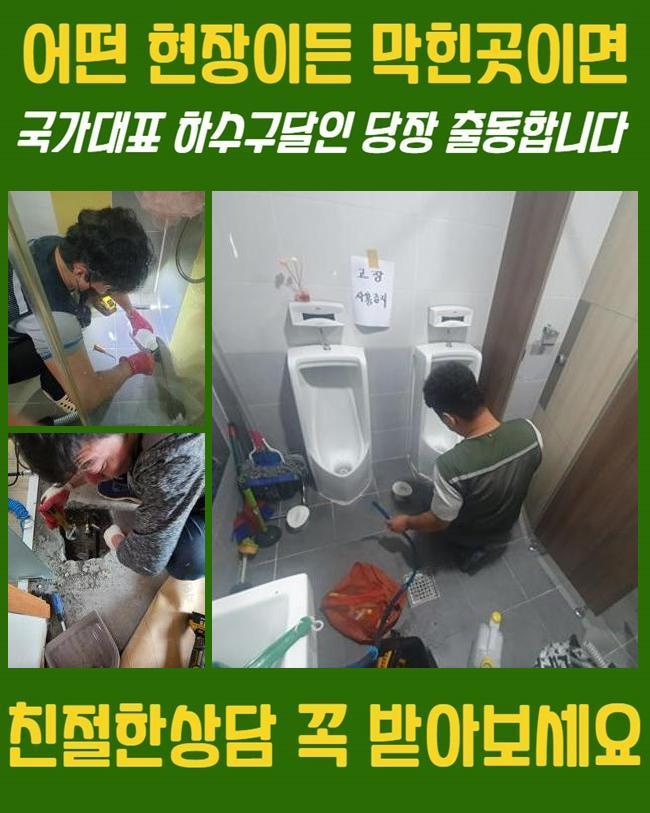
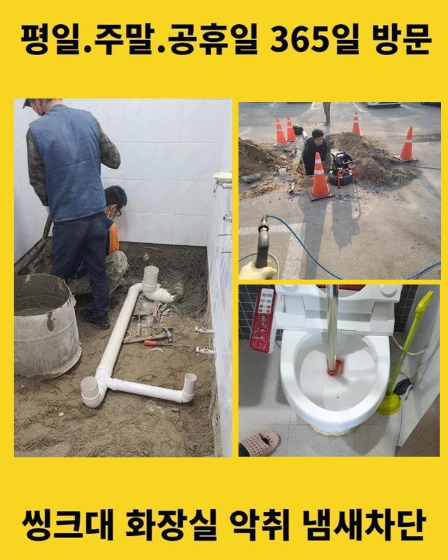
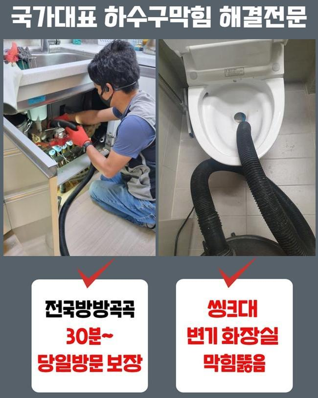
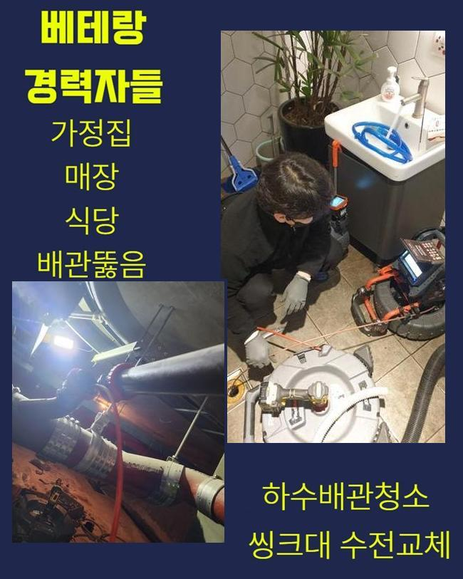
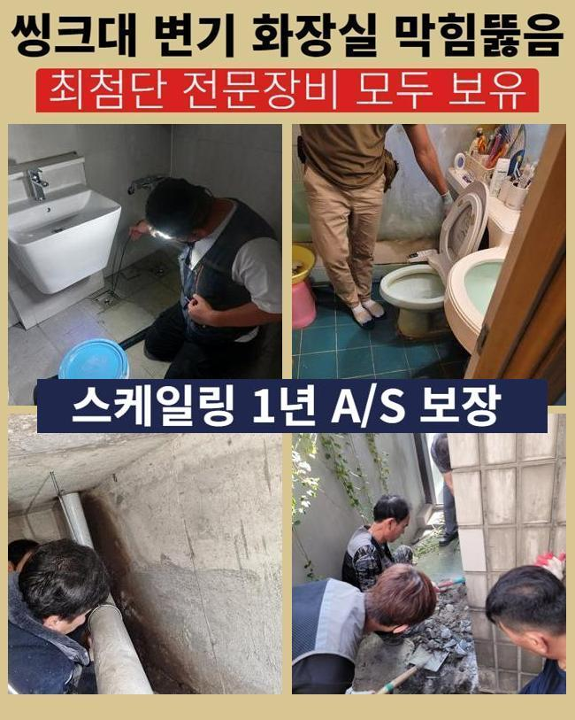
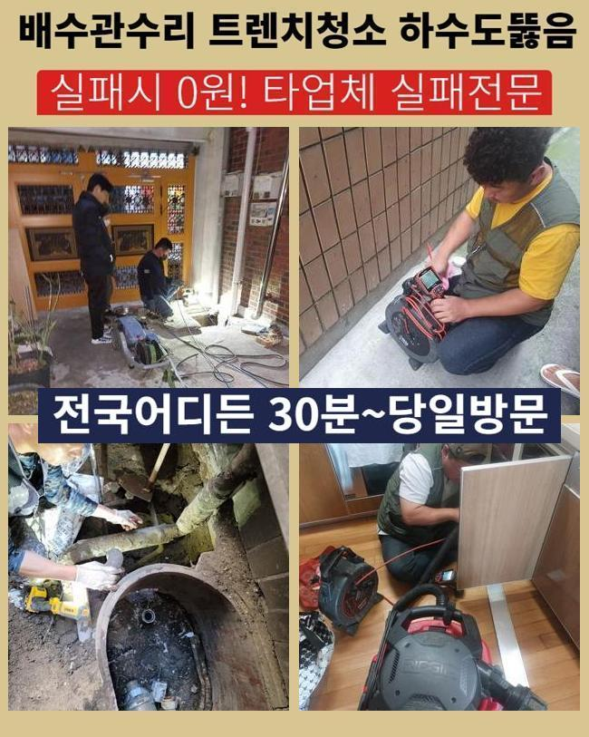

🏠 산본동화장실막힘 수리동 하수관고압세척 부속수리
용인 배관막힘 전문 시공 후기

📋 작업 개요
- 위치: 용인
- 서비스 유형: 배관막힘, 누수수리, 역류해결, 뚫는업체, 배관청소, 고압세척, 설비공사
- 작업 일시: 2025. 1. 22. 0:34
- 업체명: 하수구수사대 (010-5615-2118)
🔍 문제 상황
산본동화장실막힘 수리동 하수관고압세척 부속수리
금번엔 구축아파트 관리사무실에서 우수배수관이 막혀버리는 바람에 물이 역류해버린다는 내용을 접수받았습니다
물이 자연스럽게 우수배관으로 빠져나가지 못하고 반대로 넘쳐나서 환경이 지저분해지고 이끼도 많아졌다고 말하셨어요
3달 전쯤에도 흡사한 상황에 처한적이 있으셨고 장마철이 지난뒤 더더욱 심각해졌다고 말하셨답니다
그것때문에 우수관 주변으로 오취가 증가했고 거주자들의 불편도 지속해서 늘어갔다고 하셨어요
뚫음을 즉각적으로 해달라고 요청하셨기에 관련한 출동준비를 이행하였죠
지도로 검색해보았더니 멀지않은 곳에 존재하는 곳이었어요
손님분에게 방문드릴수 있는 시간을 설명드리고 도구들을 챙긴뒤에 내방하게 되었습니다
현장쪽에 가보니 아파트 관리사무소 바로옆에 우수설비가 있었죠
겉에서 확인해 보았더니 젖은 낙엽들이 많았고 앞에서 체크해보니 이를 치우기위한 청소장비들이 마련되어 있더라고요
역류증세가 가속화되면서 경비직원분들께서 수시로 그것을 정리하셨다고 하네요
그래도 정황은 개선이 안되어서 즉각적인 수선을 요청하신 것이었죠

🔎 원인 분석
💡 전문가 진단: 정밀 진단 장비를 사용하여 슬러지의 고착 여부를 판명하고 타격/세척 작업을 실시했습니다.
우수배관은 낮은위치로 빗물 등이 집약되도록 만들어져야 하지만 이곳은 주위와 비슷한 높이로 시설물 공사를 진행하여 물고임이 늘어나게 된거였죠
이것을 정리하려면 대형공사를 해야했으나 손님분에게서는 그 부분은 나중에 생각해보자고 하셨고 우선 뚫음부터 해달라고 요청이야기하셨어요
우수관로의 정체상황을 표면적으로 점검해보았더니 나뭇잎들도 많았지만 일반 가정에서 버린 쓰레기들도 상당했어요
그로인해 파이프가 막혀버렸고 역류가 일어날 수준으로 사태가 발전된거죠
손님분께 혹시나 가정안에서 우수설비로 생활하수를 내려보낼수 있는지 확인해 보았는데요
일부주민들이 베란다 청소를 위해서 이용한다고 말하셨어요
해당 문제들에 관해 수시로 자제를 요구하였지만 잘 지켜지지않는 상황이라 말하셨답니다
그러한 상황이 계속된다면 재발이 발발할수 있단걸 고지하였으며 연관된 예방조치를 세워나가기로 결단하셨죠
우수시설을 열어봤더니 우수가 잘 배출되지 못하고 있는게 즉각 목견되었죠
우수관로 근방에 잔재들이 가득차 있었기에 작업에 돌입하기 어려웠답니다
그것에 더하여 파이프 속에 잔존하는 슬러지도 많았고 단단하였기 때문에 간소한 장비로 처치하기엔 어려웠답니다
그래서 저희들은 전동스프링을 활용해서 강력하게 세척해주는 방안을 선택하게 되었어요
우수관주변이 넓지 않았고 비까지 내려 작업을 시행하기 곤란하긴 했어요

🔧 작업 과정
그래도 주민들의 불편함을 조속히 없애드리고자 하는 생각으로 즉각 업무를 시작했죠
배관카메라는 관로안을 체크하고 이물상태를 파악하는데 핵심이라고 볼수 있답니다
이것으로 우수관내부의 문제점을 분명하게 밝혀내고 그것을 바탕으로 수리시간을 줄일수 있었어요
그것과 동시에 배관스프링 청소기를 통해 찌거기를 소멸시키는 업무가 단행되었습니다
우수관로의 사이즈가 작은 경우에 거름장치가 없어 찌꺼기들이 손쉽게 흘러드는 형국이 많이 나타납니다
그렇게되면 침전물들이 누증되고 결국은 파이프가 막혀버려 역류증세가 생겨나거나 세균이 증식할 여지도 올라가겠죠
그것을 예방하려면 자주 내부청소를 시행해야 하며 쓰레기들이 침투하지 못하도록 배수구망을 걸어두는 작업도 필요하답니다
그것들과 관련해서 의뢰인께 말씀드렸고 또한 사용량이 많은 곳일수록 한층 관리해나가야 한다는 것도 강조하였습니다
소제를 실시하면서도 우수관로 측면에 금이 가지는 않았는지 누수증상의 가능성은 없는지를 확실하게 조사하였답니다
이러한 과정으로 부가적 고장을 방지하고 주민들의 안녕을 만들어드릴수 있답니다
큰 찌꺼기들을 제거하고나서도 관로에는 아직 잔류물질이 상당량 체류하고 있었죠
해당 상황을 정비하기 위하여 샤프트분쇄기를 가동하였어요
샤프트기기는 재빠르게 움직이는 체인을 활용해서 관에 부착된 이물들을 분쇄시키는 기능을 하며 강한 회전력을 바탕으로 빈틈없이 찌꺼기들을 세척해낼수 있답니다
그리고 관로안쪽을 훼손시키지 않고 사고의 위험이 적다는 강점이 존재해요
빗줄기가 멈춘다음 우수관주변의 이물들을 정리하기 위해서 흡입기기를 사용해 최종적으로 공정을 완료하였죠
샤프트기기로 처리한 성분들을 반복적으로 흡입기기로 청소하며 완전무결하게 트러블을 정리할수 있던거죠
거주자분들의 고초를 최대한 감소시켜 드리려는 마음으로 끝까지 성심성의껏 일하였고 배관은 정상으로 유동성을 가진 모습으로 뚫리게 되었답니다
이를 통하여 말끔한 우수파이프를 유지해나가는 일이 정말 중요하다는 점을 다시금 인지시켜 드렸어요
관이 막혀버린다면 간소하게 물고임으로 끝나는게 아닌 더더욱 커다란 사태로 전이되기도 하므로 주기적으로 정비해나가야 한단 사실을 늘 강조드리고 있죠
더더구나 해당 단지는 우수배관의 높이자체가 높았기 때문에 한층 자주 손봐야한다는 내용도 말씀드렸답니다


✅ 작업 완료
고객님에게서는 배관 내시경 이것을 활용해 전체 시공 업무를 바로바로 보실수 있었으며 최종적으로 하수를 내려서 테스트를 진행하였어요
이러한 방식으로 단지안의 우수배관의 막힘을 정리하였고 역류가 생기는 문제들도 확실히 정리됐죠
관리해나가기 곤란한 공용배관이나 가지배관 고장도 경험많은 담당자를 통하여 빈틈없이 검사하고 정비받으시길 당부드려요
고객님의 집안 시설물에 이상이 일어나지 않기를 바랍니다
만약 문제가 포착되었다면 망설이지말고 전화해주세요 빠르게 방문드릴게요




⚠️ 베란다 누수 및 방수 관리 방법
- ✅ 비가 많이 올 때 창틀 주변이나 아래층 천장에 얼룩이 생기는지 정기적으로 확인해 보세요.
- ✅ 우수관 주변 실리콘 마감이 들뜨거나 깨진 틈새가 있는지 손상 여부를 수시로 체크하세요.
- ✅ 베란다 바닥 타일의 줄눈(메지)이 소실되면 그 틈으로 물이 침투하여 누수가 유발됩니다.
- ✅ 누수 의심 증상 발견 시 방치하면 아래층 손실이 커지므로 즉시 전문가의 진단을 받으십시오.
💡 핵심 정리
- 확실한 장비 작업(내시경 점검 및 샤프트 스케일링)으로 원인을 뿌리 뽑습니다.
- 작업 후 1년 이내에 동일한 부위 재발 시 100% 무상 A/S 서비스를 보장합니다.
- 서울 · 경기 · 인천 전 지역에 24시간 언제든 긴급 출동할 수 있도록 항시 대기 중입니다.
❓ 자주 묻는 질문 (FAQ)
🚨 용인 배관막힘 문제로 고민이신가요?
정확한 원인 진단과 확실한 시공으로 재발 없는 해결을 약속드립니다.
24시간 긴급 출동 | 서울 · 경기 · 인천 전지역 | 1년 내 재발 시 무상 A/S